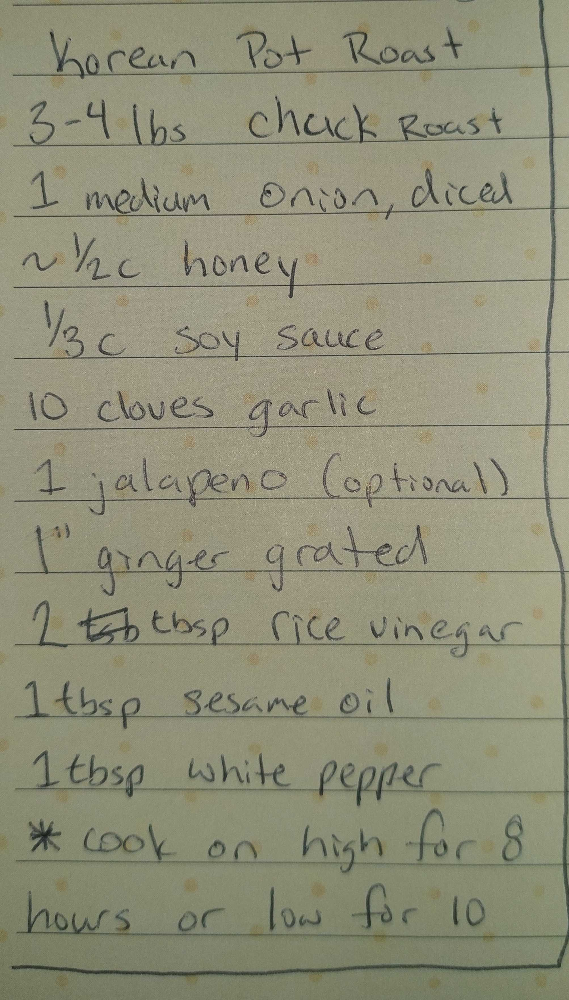

Korean Pot Roast
Ingredients
- 3-4 lbs chuck roast
- 1 medium onion, diced
- ~½ cup honey
- ⅓ cup soy sauce
- 10 cloves garlic
- 1 jalapeno (optional)
- 1" ginger, grated
- 2 tbsp rice vinegar
- 1 tbsp sesame oil
- 1 tbsp white pepper
Instructions
- Combine all ingredients in a slow cooker.
- Cook on high for 8 hours or low for 10 hours.
